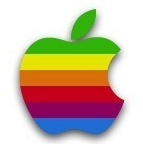

Steve Paul Jobs
Informacje podstawowe
Steven Paul Jobs (ur. 24 lutego 1955 w San Francisco, zm. 5 października 2011 w Palo Alto) – współzałożyciel (wspólnie ze Steve’em Wozniakiem), były prezes i przewodniczący rady nadzorczej Apple Inc. Był jedną z pierwszych osób, która zauważyła potencjał tkwiący w wynalazku laboratoriów przedsiębiorstwa Xerox, czyli środowisku graficznym i myszy komputerowej, dzięki czemu sukces odniosły później komputery Macintosh oraz ich graficzny system operacyjny Mac OS. Jobs był twórcą przedsiębiorstwa NeXT Inc. (zostało przejęte przez Apple Computer Inc, obecnie Apple Inc.).
Dzieciństwo i edukacja
Jego ojciec Abdul Fattah Jandali (Abdulfattah John Jandali) urodził się w syryjskim mieście Hims. Studiował na Uniwersytecie Amerykańskim w Bejrucie, następnie wyjechał do Stanów Zjednoczonych, aby kontynuować naukę. Tam poznał Joanne Carole Schieble. W 1955 roku urodził się Steve, który wkrótce po urodzeniu został adoptowany przez Paula i Clarę Jobsów z Mountain View w Kalifornii. Jego biologiczną siostrą była pisarka Mona Simpson. W młodości Steve był weganinem (odżywiał się pokarmami niezawierającymi produktów odzwierzęcych), jednak później przeszedł, jak to sam określił w wywiadzie, na „jedzenie tych samych świństw co i inni”. W 1972 roku Jobs ukończył szkołę średnią w Cupertino w Kalifornii i przez jeden semestr studiował prawo w Reed College w Portland w stanie Oregon.
Początki kariery
 Jesienią 1974 r. Jobs powrócił do Kalifornii, gdzie chodził na spotkania klubu komputerowego „Homebrew Computer Club” razem ze Steve’em Wozniakiem. Rozpoczął pracę w Atari, gdzie wraz z Wozniakiem projektował gry komputerowe. W tym czasie odkryto, że zabawkowy gwizdek dołączony do płatków śniadaniowych Cap'n Crunch mógł wydawać dźwięk o częstotliwości 2600 Hz, sygnał kontrolny używany przez system telefonicznych rozmów międzymiastowych AT&T. Jobs i Wozniak krótko w 1974 r. sprzedawali tzw. niebieskie pudełka (ang. blue boxes) oparte na tym pomyśle, dzięki którym można było dzwonić za darmo. Zarobione pieniądze planował przeznaczyć na podróż do Indii w celu osiągnięcia oświecenia duchowego. Jobs pojechał tam ze swoim kolegą (a później pracownikiem Apple) Danielem Kottkem, z którym studiował na Reed College. Spotkali się tam z guru Neem Karoli Babą w jego aśramie Kainchi. Z Indii Jobs wrócił jako buddysta, z ogoloną głową i w tradycyjnym stroju hinduskim. W tym czasie eksperymentował z LSD.
Apple
W 1976 roku, wspólnie ze Steve’em Wozniakiem, założył Apple. Pierwszym komputerem ich produkcji był Apple I, sprzedawany za 666,66 USD. W 1977 r. zbudowali Apple II, który odniósł sukces na rynku komputerów domowych. Dzięki Apple II przedsiębiorstwo Apple stało się jednym z najważniejszych przedsiębiorstw produkujących komputery domowe. W 1980 r. Apple weszło na Nowojorską Giełdę Papierów Wartościowych, na rynku pojawił się także Apple III. W 1983 roku Jobs namówił Johna Sculleya z PepsiCo, by został prezesem Apple. Zapytał go: Czy chcesz przez resztę życia sprzedawać słodzoną wodę, czy wolisz iść ze mną i zmieniać świat? W tym samym roku Apple wydało zaawansowany technologicznie komputer Apple Lisa, który jednak nie odniósł sukcesu rynkowego. W 1984 r. pojawił się Macintosh.